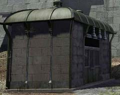
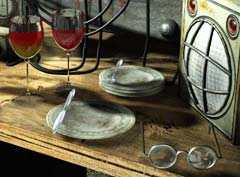

| 概要 | 地図 | |
| 淡いヒント集 | ヒント集 | 的確なヒント集 |
| 攻略最短ルート | Syberia 攻略へ |
| << 前の段階へ | 地域選択へ |
バロクシュタット
|
国境

講義を聴き終えたあなたに対し、ポンス教授は実験室に来るように言うだろう。必ず行かなければならない。マンモスの人形を置いて旅を続けられるだろうか? なお、実験室では講義のノートも手にはいるだろう。忘れずにもらっておこう。最後に、実験室から拝借した件について話してはならない。


機関車のゼンマイを巻き終えたあなたは、窓口へ行かなければならない。窓口にはオスカーがいて、ビザを提出するまで切符は発行できないと言うだろう。 ビザは、国境の監視室にいる大佐が持っている。彼に会い、発行してもらおう。  
大佐は国境の向こうにはコサック兵がいると主張している。はたして本当だろうか? 机に置いてある眼鏡を見てみよう。ひどく汚れている。これでは、視力に影響が出ている可能性がある。もしかして、コサック兵はいないのかもしれない。実際に調べてみる必要がある。  望遠鏡を除くと、ぼやけていて何が写っているか分からない。そのような場合は、左右に付いている赤いボタンを押すとよい。きっとピントが合い、コサック兵ではなく枯れ木であることが確認できるはずだ。 しかし、自分が分かったところで大佐は信じてくれないだろう。

視力を一時的によくする方法があったはずだ。ヤンガラコーラの粉末を使うのだ。 駅長からワインをもらっているだろう。机にあるグラスに、粉末とワインを混ぜて飲ませれば、きっと大佐は視力が回復し、真実を知るだろう。 
ビザを窓口で提出したあなたは、オスカーから切符を受け取るだろう。 それだけでは機関車は出発しない。機関車内に入り、オスカーに切符を渡そう。決して、面倒くさいといって規則を破ろうなどと考えてはならない。 |
| << 前の段階へ | 地域選択へ |
| 概要 | 地図 | |
| 淡いヒント集 | ヒント集 | 的確なヒント集 |
| 攻略最短ルート | Syberia 攻略へ |
Syberia
| 目次へ戻る | ページの上部へ |